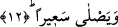

cehennemlik olduğunun alâmeti olarak sağ tarafından başka bir yönden verilince kâfir,
“Yetiş ey ölüm, nerdesin ey helâk!” diye bağıracaktır.
Ferra âyette geçen bu “sübur” kelimesini şöyle açıklıyor: Araplar, herhangi bir kimse
sıkıntılı bir durumla karşılaştığında, “Yetiş ey pişmanlık, neredesin ey ölüm” derler.
Bazı âlimlerin ifâdesine göre okuduğumuz âyette yer alan ve helâk mânâsına gelen
sübur, herhangi bir şeye devam etmek, ondan ayrılmamak kökünden türemiştir. Bundan
dolayı âhiret helâkine sübur denmiştir. Çünkü âhiret helâki kişiden hiç ayrılmayan ve
ona yapışan bir helâktir. Nitekim Allah’ın bir ifâdesi bunu bize göstermektedir:
“(Onlara şöyle denir:) Bugün (yalnız) bir defa yok olmayı istemeyin, aksine bir çok
defalar yok olmayı isteyin!” (Furkan 25/14)
Keşfü’l-esrâr’da şöyle gelmiştir: Pîr Ebû Ali Siyâh bir vakit pazara gidiyordu.
Dilencinin biri; “büyük gün hakkı için bana bir şeyler veriniz” dedi. Bu söz karşısında
pîrin aklı başından gitti. Yeniden kendine geldiğinde ona; “Ey Şeyh o vakit sana ne
göründü?” diye sordular. Şeyh: “O büyük günün heybet ve azameti” diye cevap verdi ve
şöyle devam etti: “Hüzün eksikliğinden dolayı eyvahlar olsun, pişman olmamaktan
dolayı eyvahlar olsun.”
12. Alevli ateşe girecektir.
Yani o kimse alevli ateşe girecek, o ateşin harâretini ve azabını arada herhangi bir
engel olmaksızın hissedecektir. Bu ifâde bize gösteriyor ki onların: “Neredesin ey
ölüm!” diye bağırmaları, ateşe girmelerinden önce olacaktır. Bu görüşü İmam
Fahreddin Razi açıkça dile getirmiştir. Ancak bir başka âyet-i kerimede Allah şöyle
buyurur: “Elleri boyunlarına bağlı olarak onun (Cehennemin) dar bir yerine
atıldıkları zaman, oracıkta yok oluvermeyi isterler.” (Furkan 25/13) Görüleceği
üzere bu âyet-i kerime ise onların yok olmayı temennî etmelerinin Cehenneme atıldıktan
sonra olacağını gösteriyor. Her iki âyette anlatılan durumun gerçekleşeceğini
söylememizde herhangi bir çelişki doğmaz. Çünkü onlar hem Cehenneme girmeden ve
hem de girdikten sonra yok olmayı temennî ederler. Hatta onlar sürekli olarak bu
temennîyi yaparlar. Üstelik bilindiği üzere arapçada vav harfi iki şeyi birbirine
atfederken arada öncelik ve sonralık açısından herhangi bir sıralama ifâde etmez. Vav
mutlak olarak iki şeyin bulunduğunu ifâde eder.
Bu âyet-i kerimede celâlî esmâ kâtiplerinin kalemiyle ezel divanına yazılmış fıtrî
istidad kitabına işâret edilmektedir. Çünkü o kimse dünyada iken hakta fâni olmayı ve
enaniyetinden kurtularak hakta helâk olmayı temennî eder ve riyazat ile mücahede narına
girer. Arkasında uygun bir cezâ vardır. Çünkü o Rabbinin emrine aykırı davranmıştır.
Zira Rabbi şöyle buyurur: “İyi davranış, asla evlere arkalarından gelip girmeniz